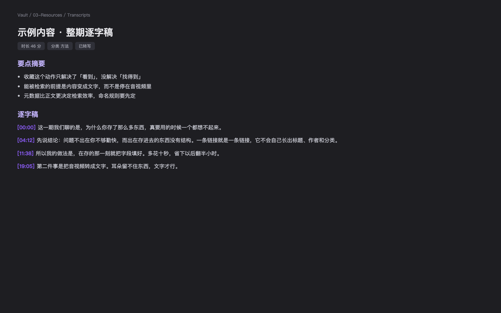
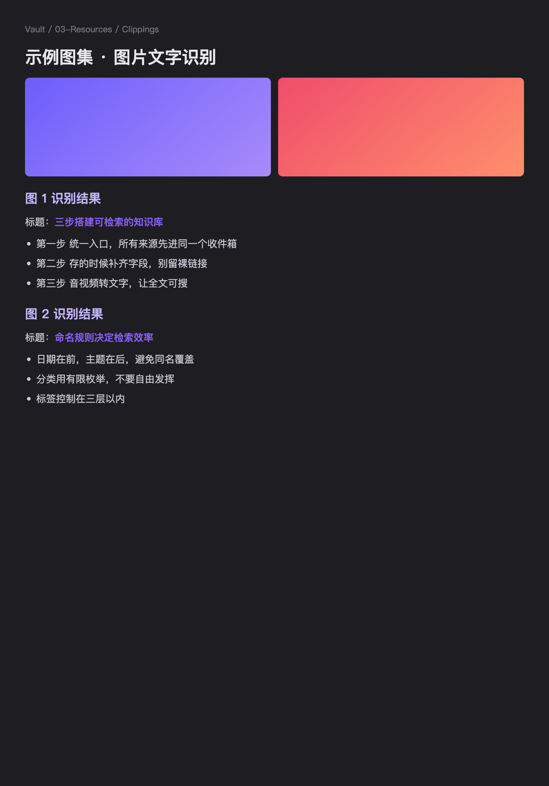

能力视频逐字稿 · 图文识别
真实界面
视频和图集
进库就变成字
十分钟的视频给你 要点 + 全文，图集里的字逐张识别，翻旧收藏不用再重看一遍。

桌面 · 逐字稿

平板 · 图片文字
1
视频逐字稿要点 + 整理后全文，想引用哪句直接搜
2
图集文字识别攻略图、清单图逐张认字，图里的内容也能检索
3
视频嵌进笔记原片点开就播，不用跳回小红书
小红书 → Notion
桌面 / 平板 / 手机，打开 Notion 都在